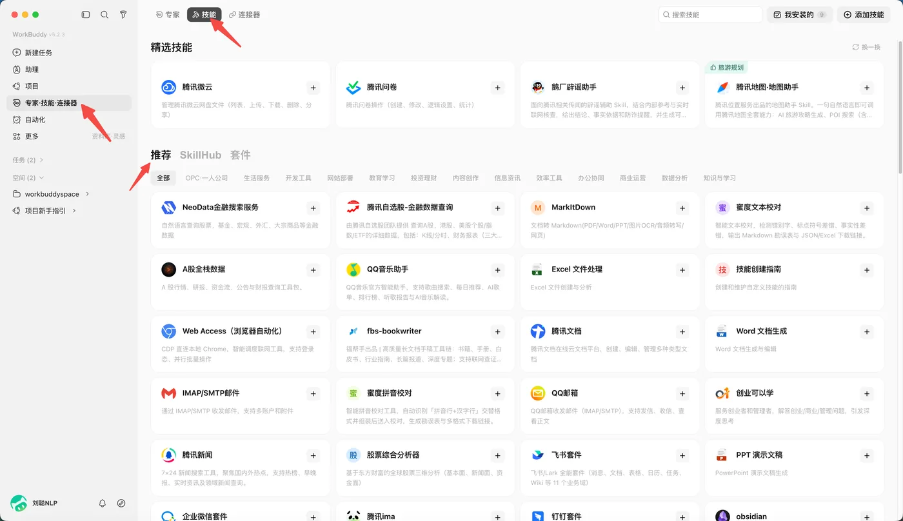

本课导读模块二
上一课你学会了给 WorkBuddy 下任务。但同一件事说第二遍、第三遍，就是在浪费时间。 这一课学技能（Skill）——把一套做法写成文件，以后一句话就能调用。
学习目标
学完这一课，你应该能——
- 说出 Skill 是什么，以及它和一个「说明文件」的关系；
- 说出在 WorkBuddy 里找到并安装 Skill 的四种方式；
- 独立完成一次「找到 → 安装 → 调用」的完整操作；
- 说出为什么技能的「描述」写得越具体越好用；
- 说清「关闭」和「卸载」有什么不一样。
知识点导航
一、Skill 是什么概念
WorkBuddy 负责理解任务、组织执行；Skill 则是一组可复用的说明、脚本、参考资料， 告诉它某一类任务该怎么做、调用什么工具、交付什么格式。
一个最简单的 Skill，就是下面这样一个文件夹：
my-skill/
├── SKILL.md ← 必需：写明用途、输入、输出、步骤
├── scripts/ ← 可选：可执行的脚本
├── references/ ← 可选：模板、规范、示例
└── assets/ ← 可选：输出要用的素材
四个里面只有 SKILL.md 是必须的。它开头那一小段里，
description 最关键——决定了 AI 什么时候会想起用它：
---
name: tech-article-writing
description: 用于撰写 AI 产品、模型评测和科技行业相关文章。
当用户要写公众号文章、产品体验稿时使用。
---
（下面写明具体步骤：先确认角度 → 查一手资料 → 交叉验证 → 成稿 → 检查 AI 味）
二、它是怎么工作的机制
你可能担心：装了几十个技能，AI 每次开工前要把它们的说明全部读一遍吗？那得多慢。
不会。它用的是渐进式披露——像查手册一样，用到哪一层才翻哪一层：
| 层级 | 什么时候加载 | 加载什么 |
|---|---|---|
| 第一层 | 启动时加载，所有技能都加载 | 只有 name 和 description 两行 |
| 第二层 | 判断「可能用得上」之后 | 完整的 SKILL.md 正文 |
| 第三层 | 执行到某一步、确实需要时 | references/ 里的文档、scripts/ 里的脚本 |
Skill 由 Anthropic 于 2025 年 10 月 16 日推出，2025 年 12 月 18 日发布为开放标准； WorkBuddy 的技能沿用同一套文件夹规范。本站核对日期 2026-09。
三、在 WorkBuddy 里找到 Skill动手
左侧边栏点「技能」进入技能页，这里有四种方式拿到技能：

| 方式 | 你做什么 | 什么时候用 |
|---|---|---|
| 市场安装 | 浏览或搜索，点安装 | 需求常见，别人已经做好了 |
| 查找技能 | 用一句话描述需求，让它自己去找 | 知道自己要干嘛，但不知道有没有现成的 |
| 上传技能 | 拖入技能包（文件夹或 zip） | 别人分享给你的技能包 |
| 创建技能 | 用一句话描述，让它从零建一个 | 市面上没有，而这活你要反复做 |

- 先选一件你这周真要做的活从下面勾一个（或换成你自己的）：
□ 把一份 PDF 转成 Word
□ 把一张表里的重复行去掉
□ 把一段会议录音转成文字 - 把这句话原样打进去搜点右上角「添加技能」→ 选「查找技能」， 把你刚勾的那句话整句敲进去，例如「把 PDF 转成 Word」。
- 挑一个之前，先看三样
① 是不是官方 / 推荐标记？
② 它要什么权限？（只要读文件，还是要联网、要登录账号？）
③ 描述里说的，跟你那件活对得上吗？ - 装上，然后回去核一遍回到「已安装」，点开刚装的技能，把它的描述读一遍—— 用一句话说出它到底能干什么。
完成标准：能完整说出下面两句话——
① 我装的是 ____________，它能 ____________。
② 它跟我要做的那件事（对得上 / 对不上），因为 ____________。
如果第 ② 句写的是「对不上」，那你其实已经学会判断了——换个技能再试，比装错强。
四、用一个技能改一篇稿子本课主线
下面走一个完整流程。场景：文章写好了，但读起来「AI 味」很重， 想用「文章去 AI 味工具」这个技能改一遍。
- 装技能在上一步已经装好了。
- 唤起它在输入框打一个 /，弹出技能列表，选中目标技能。
- 把稿子给它引用技能内容，把文章贴进去，直接发。
- 看它执行它会先读技能里的规则，再照着规则改——不是凭感觉润色。
- 对比结果拿改后的版本和原文比一遍，看它去掉了什么。


素材是上面那段通知稿，点它右上角的「复制」拿走。
第 1 步 · 先自己改（5 分钟，不许用 AI）
- 粘进记事本或 Word把原文贴进去，先别动。
- 照着清单圈空话词下面这些词，见到就圈出来：
进一步 切实 有效 积极 深入贯彻落实 相关精神 营造氛围 紧紧围绕
形式多样 内容丰富 特色鲜明 潜移默化 携手共进 共同感受 汲取力量 - 全删掉圈出来的词一个不留。
- 把空位补上具体信息时间、地点、怎么参加、带什么——编的也行， 但要在后面标上「【模拟】」。
第 2 步 · 再用技能改（5 分钟）
- 新开一个对话不要在刚才那个对话里做——新对话才能让技能生效。
- 打一个 /输入框里敲斜杠，从弹出的列表里选「文章去 AI 味」这一类技能。
- 把原文贴进去发送注意：贴原文，不要贴你改好的那版。
第 3 步 · 两份放一起比（5 分钟）
| 比什么 | 我的发现 |
|---|---|
| 它删空话词，删得比我干净还是不如我？ | |
| 它多删了什么？（该留的被删了） | |
| 它少删了什么？（残留的空话） | |
| 它有没有编造具体信息？ |
最后一行是重点。技能照着规则改文字没问题，但时间、地点这些它不知道的事， 它不该自己编——如果编了，说明这个技能的规则还不够严。
完成标准：拿你改后的稿子逐条对——
| 检查项 | 过 / 不过 |
|---|---|
| 一眼能看到「什么时候、在哪、怎么参加」 | |
| 清单里的空话词一个不剩 | |
| 自己编的信息都标了「【模拟】」 |

校园读书节活动通知
时间：本周五下午 2:00 — 4:30【模拟】
地点：图书馆一楼大厅【模拟】
对象：全校学生
现场三件事：
1. 好书推荐墙 —— 把你最喜欢的书写在墙上，推荐理由一句话就够
2. 读书分享会 —— 10 位同学现场分享，每人 5 分钟，想讲就现场报名
3. 旧书互换 —— 带一本完整的旧书来，和现场的同学交换
怎么参加：现场签到即可，不用提前报名。
联系人：图书馆值班老师【模拟】
（提醒：把【模拟】换成真实信息，这份通知才能发出去。）
description 是不是没写清楚。
五、关闭与卸载管理
技能装多了会互相干扰，也更容易被误调用。官方的建议是：只启用当前任务需要的技能。
好消息是不必为了「少点干扰」而卸载——关掉就行，随时能开回来。
| 操作 | 技能文件 | 会被自动调用吗 | 能恢复吗 |
|---|---|---|---|
| 关闭 | 保留 | 不会 | 开关一拨就回来 |
| 重新开启 | 保留 | 会 | — |
| 卸载 | 彻底删除 | 不会 | 要重新安装 |

- 关掉它回「已安装」，找到刚才装的那个技能，把开关拨到关闭。
- 试第一次新建一个对话，把你原来那句需求原样打进去，看它还触发吗。记下结果。
- 开回来回到技能页，把开关再拨回开启。
- 试第二次再新建一个对话，重复第 2 步，记下结果。
完成标准：把这四个空填出来——
① 关掉之后，它还在「已安装」列表里吗？ 答：______
② 关掉之后，第一次试的结果是： 答：______
③ 开回来之后，第二次试的结果是： 答：______
④ 两次结果如果不一样，说明「关闭」到底做了什么？
答：______
参考答案：① 在；② 不触发；③ 触发；④ 关闭只是让它不再被自动调用， 技能文件和配置都还在，随时能开回来——所以「关闭」和「卸载」完全是两件事。

- 挑一件事从下面勾一个，或者自己想一个同类的：
□ 把每周课程笔记按科目整理成一份清单
□ 把社团活动照片按日期重命名
□ 把一周的作业要求汇总成一张待办表
选择标准：这件事你每周都要做一次，而且步骤基本固定。 - 把下面这个句式填完，发给它点「添加技能」→「创建技能」， 照这个结构说清楚：
我需要一个技能，用来 ____________（做什么）。
我希望它输出 ____________（什么形式的结果）。
有两点必须注意：
第一，____________（必须怎么做）；
第二，绝对不能 ____________（不许做什么）。
照着这个例子写：
我需要一个技能，用来把每周的课程笔记按科目整理成清单。
我希望它输出一份 Markdown 表格，列出科目、笔记标题、页数。
有两点必须注意：
第一，只读不写，不要修改我的原笔记；
第二，绝对不能删除任何文件。
- 读它造出来的技能说明，找出一个不足照这三条来找，命中率最高：
① 描述太笼统——只说「整理笔记」，以后 AI 认不出该什么时候用它；
② 没写「不能做什么」——红线缺失；
③ 没写出错怎么办——比如「文件不存在时该怎么做」。
完成标准：用一句话说清「它哪一处不够好、应该改成什么」。例如——
它的 description 只写了「整理笔记」，太笼统。
应该写成：「把课程笔记按科目整理成清单，当我说『整理笔记』时使用」——
把触发词写进去，AI 才认得出我什么时候需要它。
这个任务不看结果多漂亮，只看你能不能指出它一个毛病—— 能挑出毛病，说明你真读懂了技能在干什么。
随堂自测不计分 · 课后自检
先自己想，再点开答案。这套题是给你自己查漏用的，和要提交的作业不重复。
- A. 它的回答更长更详细
- B. 它能把一套做法固化成文件，反复复用
- C. 它只能在联网时使用
- D. 它可以绕过权限访问你的电脑
- A. 把 100 个技能的完整说明全部读一遍
- B. 只读每个技能的名称和描述，判断相关了才读完整说明
- C. 随机挑几个读
- D. 一个都不读，等你点名
- A. 技能文件夹的名字里
- B. SKILL.md 的 description 里
- C. scripts 目录下的脚本里
- D. 写在 skills 目录的上级目录名里
description 是唯一「永远在场」的信息，
AI 判断要不要用这个技能，能看到的就这一行。把你平时会说的词写进去，它才认得出你。
- A. 正确，装得多一定更慢
- B. 错误，未触发的技能只占用很小一段描述，开销可忽略
本课要点回顾
这一课要带走五件事
- Skill = 一组可复用的说明和资源，其中只有
SKILL.md是必需的； description决定它什么时候被用上——写得具体，才认得出你的需求；- 拿到技能的四种方式：市场安装 / 查找 / 上传 / 创建；
- 调用三步：装好 → / 唤起或直接说 → 把材料交给它；
- 关闭 ≠ 卸载：关掉不删文件、随时开回来。
下一步棋：今天你让 AI 会了一门手艺。 但真实工作里，一件复杂的事往往要几种人配合——下一课 专家与专家团 讲的就是这件事。
课后作业单选 / 多选 / 判断
下面这套题发在学习通上。点右上角「复制」可以整段拿走。
1.（单选）一个 Skill 文件夹里，哪个文件是必需的？
A. scripts 目录
B. SKILL.md
C. references 目录
D. assets 目录
【答案】B
【解析】只有 SKILL.md 是必需的，另外三个目录都可选。它写明用途、输入、输出和步骤，其中 description 决定了 AI 什么时候会想起用这个技能。
2.（多选）下面哪些方式可以在 WorkBuddy 里拿到技能？
A. 在技能市场里搜索后安装
B. 用「查找技能」描述需求，让它自己去找
C. 上传别人分享的技能包
D. 用「创建技能」让它从零生成一个
【答案】ABCD
【解析】四个都对。这正是技能页「添加技能」里的三个入口，加上直接在市场里搜。四种方式的区别只在于技能是不是现成的：A、B 用现成的，C 用别人给的，D 是让 AI 现做一个。
3.（单选）技能装好了，在原对话里说需求却没有触发。最应该先试哪一步？
A. 立刻卸载重装
B. 换一个技能
C. 新开一个对话再说一次
D. 重启电脑
【答案】C
【解析】「装完技能需要在新对话中生效」是最常见的排查第一步，成本最低。A 和 B 都是跳过排查直接下结论，D 与本题原因无关。正确顺序是：先换新对话 → 再在需求里点名技能 → 最后才看 description 写得清不清楚。
4.（单选）在输入框里打出下面哪个符号，可以唤起技能列表、手动选中要用的技能？
A. #
B. /
C. @
D. +
【答案】B
【解析】打一个斜杠 / 就会弹出技能列表，选中即用，这是最不容易认错技能的方式。@ 是用来引用文件的，别混了。
5.（判断）把技能关掉，等于把它卸载了。
A. 正确
B. 错误
【答案】B（错误）
【解析】关闭只是停止自动调用，技能仍在「已安装」列表里，开关一拨就恢复；卸载才会彻底删除技能文件。所以平时想「少点干扰」，关掉就行，不必卸载。
6.（多选）关于技能的管理，下面说法正确的是？
A. 关闭后技能仍保留在「已安装」列表里
B. 关闭会删除技能的源文件
C. 卸载后需要重新安装才能恢复
D. 关闭只是不再自动调用，随时可以重新开启
【答案】ACD
【解析】B 说反了。关闭不会动技能文件，它只是把你个人的开关状态记进配置，连 SKILL.md 都不会改。正因为关掉不删文件、随时能开回来，才建议用「关闭」代替「卸载」。
共 6 题，加上上面的随堂自测 4 题，本课合计 10 题。 随堂自测供你课后自查，这 6 题是提交用的，两套题不重复。